Gereja Kristen Kalam Kudus Kotaraja · Jayapura, Papua Mengelola jadwal ibadah, renungan, berita, dan data jemaat
Yang bisa dilakukan setelah masuk sebagai pengelola
Tambah, ubah, dan hapus jadwal ibadah (Kebaktian Umum + komisi)
Menulis renungan harian Mezbah Keluarga beserta pokok doa
Menerbitkan berita dan pengumuman
Mengelola data jemaat: statistik, saringan, ubah data, impor/unduh Excel
Kirim undangan WhatsApp dalam sekali klik
Menyunting langsung teks halaman Tentang dan Kontak
Website: https://yenrosagala.github.io/kalam-kudus-kotaraja/ · Tanggal dokumen: Oktober 2026
Bagian 1
Masuk sebagai pengelola
Bagian admin hanya terbuka untuk pengelola. Pengunjung biasa yang membuka situs hanya melihat halaman depan tanpa tombol pengelolaan.
Buka situs gereja lalu klik tombol Login di kanan atas.
Isi Email dan Password yang sudah didaftarkan untuk pengelola.
Klik Masuk. Setelah berhasil, tombol berubah menjadi Keluar dan menu Kelola Jemaat muncul di daftar halaman.
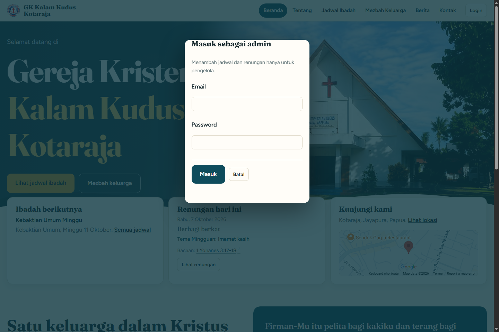
1. Dialog Masuk sebagai admin — email dan password pengelola.
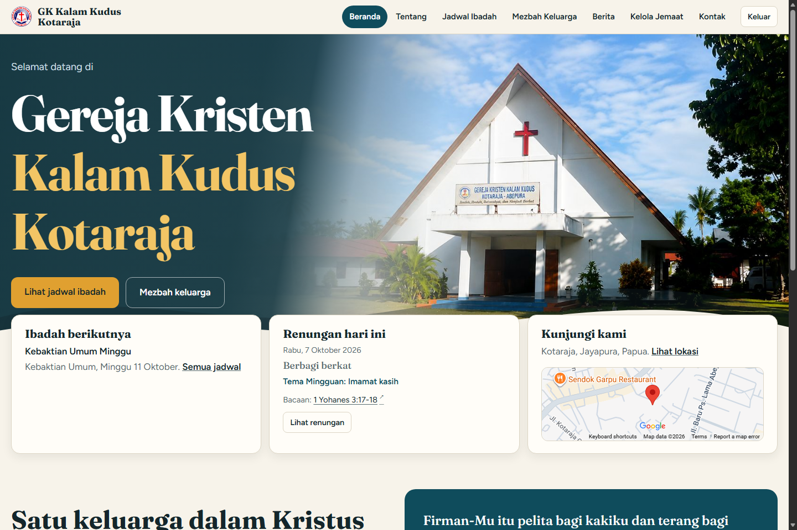
2. Setelah masuk: tombol berubah jadi "Keluar" dan menu Kelola Jemaat tersedia.
Sesi tetap tersimpan sampai Anda menekan Keluar. Untuk alasan keamanan, jangan pernah membagikan akun pengelola kepada orang lain.
Bagian 2
Mengelola Jadwal Ibadah
Halaman Jadwal menampilkan entri terbaru dari atas. Saat masuk sebagai pengelola, setiap entri mendapat tombol Ubah jadwal.
Di halaman Jadwal, klik + Tambah jadwal.
Pilih tanggal. Atur Jenis ke Kebaktian Umum atau Komisi — untuk komisi muncul kotak Komisi (Pemuda, Remaja, PW, PKP).
Isi judul, teks/ayat utama, pelayan firman, liturgis, tempat, dan waktu. Kolom lain boleh dikosongkan.
Atur Status: TERJADWAL (akan datang), SELESAI (sudah lewat), atau BATAL.
Klik Simpan jadwal.
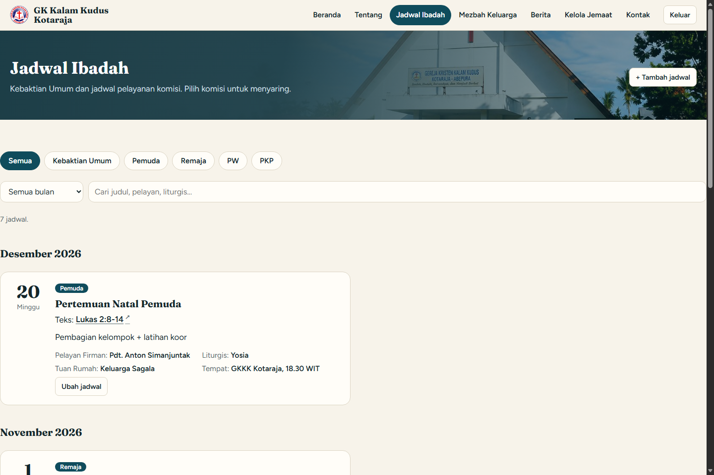
3. Daftar jadwal saat masuk sebagai pengelola; setiap entri punya tombol Ubah jadwal.
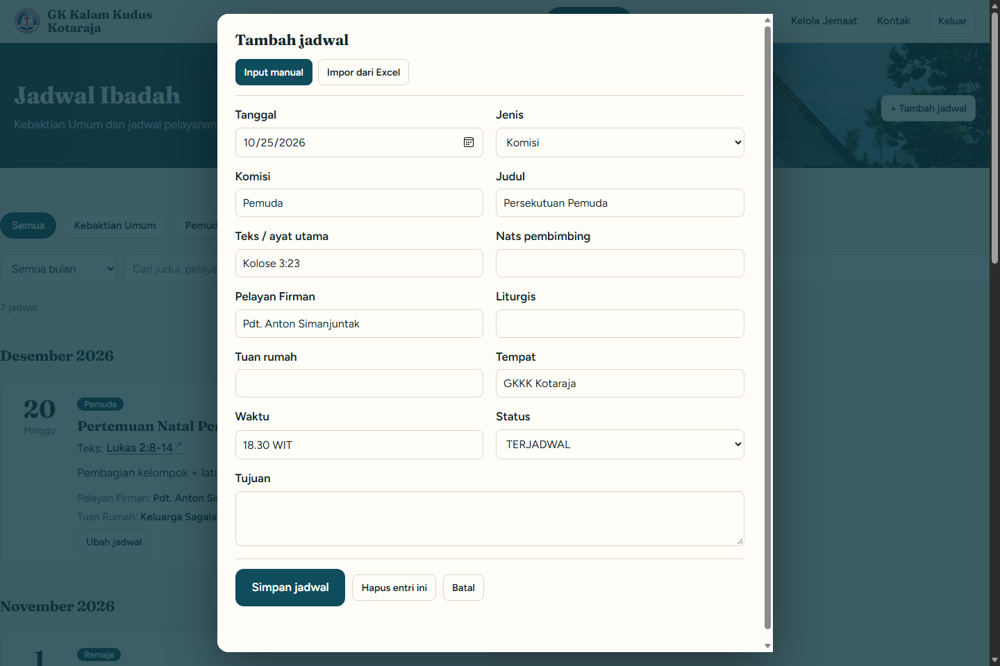
4. Form tambah jadwal. Untuk jenis Komisi, kotak "Komisi" ikut muncul.
Mengubah dan menghapus
Klik Ubah jadwal pada satu entri untuk mengoreksi isinya, lalu Simpan jadwal (menimpa entri tersebut). Untuk menghapus entri yang sedang dibuka, gunakan Hapus entri ini — sistem akan meminta konfirmasi.
Entri berstatus BATAL tidak dipakai sebagai "ibadah berikutnya" dan tidak muncul dalam teks undangan WhatsApp.
Bagian 3
Mezbah Keluarga (renungan harian)
Mezbah Keluarga menampilkan satu renungan per tanggal. Renungan "hari ini" dipilih otomatis berdasarkan tanggal sekarang, dan pengunjung bisa membuka hari lain lewat dropdown bulan.
Buka halaman Mezbah Keluarga lalu klik + Tambah renungan.
Isi tanggal, judul, tema mingguan, bacaan, dan ayat kunci.
Tulis Renungan (intisari singkat untuk dibacakan di rumah), Pesan hari ini, Refleksi keluarga, dan pokok doa (Keluarga Besar GKKK, Misi, dan doa penutup).
Klik Simpan renungan.
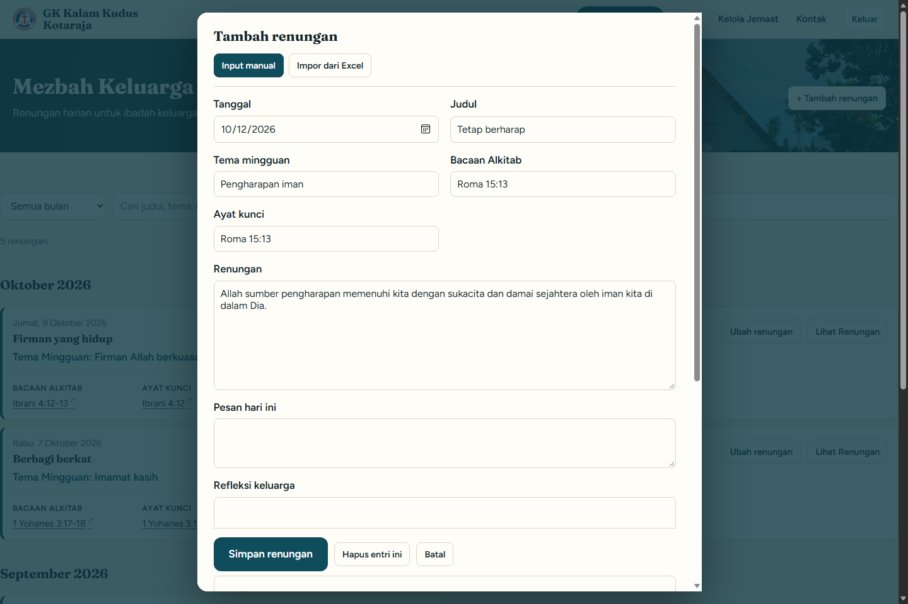
5. Form tambah renungan: judul, bacaan, renungan, refleksi, dan pokok doa.
Entri tanggal yang sama otomatis ditimpa saat disimpan — satu tanggal hanya satu renungan. Gunakan Hapus entri ini untuk menghapus renungan terbuka.
Bagian 4
Berita & pengumuman
Buka halaman Berita lalu klik + Tambah berita.
Isi tanggal, judul berita, dan ringkasan (tampil di kartu berita).
Link foto: satu alamat gambar per baris. Bisa diberi beberapa gambar untuk tampilan carousel.
Tulis Isi berita lalu klik Simpan berita.
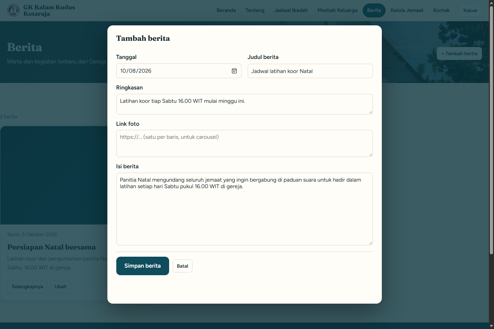
6. Form tambah berita. Ringkasan tampil di kartu, foto bisa lebih dari satu (carousel).
Bagian 5
Kelola Jemaat (daftar resmi)
Halaman ini hanya terlihat oleh pengelola. Di sini ada statistik, pendaftaran yang masuk dari form publik, dan daftar resmi yang bisa disaring.
Buka menu Kelola Jemaat di daftar halaman.
Kartu statistik menampilkan jumlah keluarga, jiwa, laki-laki/perempuan, dan pendaftaran yang menunggu.
Bagian Pendaftaran dari form publik menampilkan keluarga yang baru mendaftar lewat situs. Klik Terima untuk memindahkan mereka ke daftar resmi.
Tabel Daftar resmi bisa disaring per keluarga, daerah, komisi, atau pencarian nama.
Klik Ubah pada suatu baris untuk mengoreksi data orang itu.
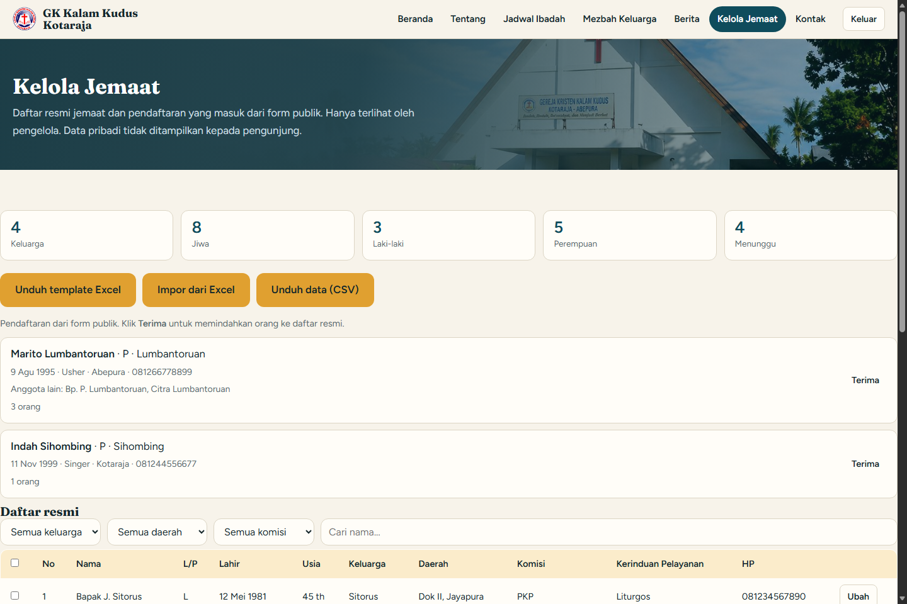
7. Halaman Kelola Jemaat: statistik, pendaftaran menunggu, dan tabel daftar resmi dengan tombol Terima dan Ubah.8. Contoh saringan: hanya menampilkan jemaat dengan komisi "Pemuda".
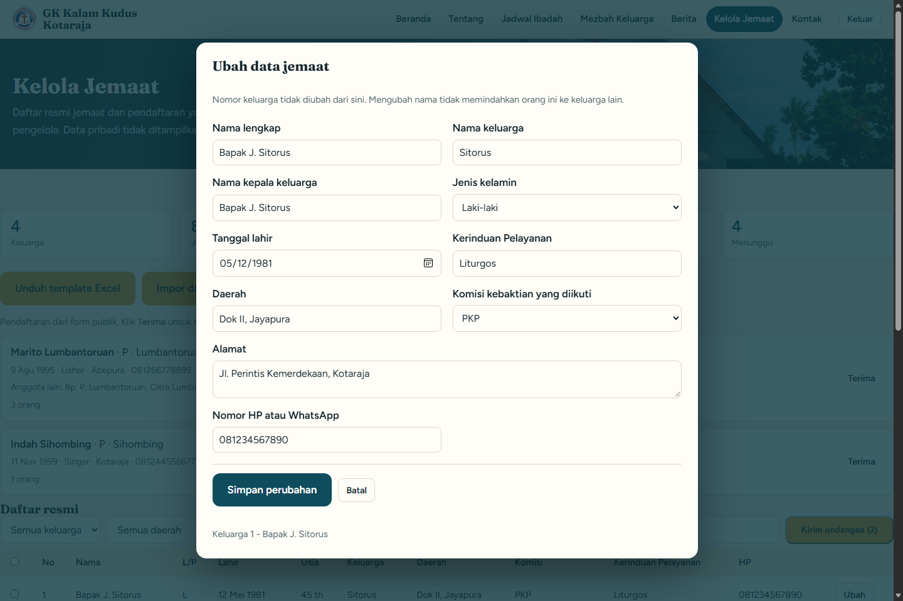
9. Dialog Ubah data jemaat — koreksi data per orang.
Data jemaat bersifat pribadi. Halaman Kelola Jemaat tidak pernah tampil untuk pengunjung, dan berkas unduhan sebaiknya disimpan di tempat aman.
Bagian 6
Kirim undangan WhatsApp
Undangan WhatsApp mengirim pesan ke nomor HP jemaat yang dipilih, lengkap dengan jadwal ibadah berikutnya.
Buka Kelola Jemaat, centang kotak di kiri baris jemaat yang ingin diundang.
Klik Kirim undangan (jumlah) di atas tabel.
Pilih Jadwal ibadah. Teks pesan terisi otomatis dan boleh diedit.
Klik nama jemaat satu per satu — WhatsApp terbuka dengan pesan siap kirim. Tekan kirim di aplikasi WhatsApp.
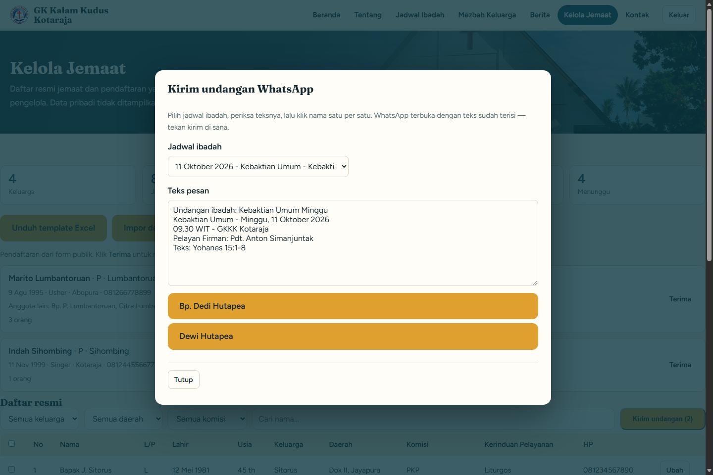
10. Dialog Kirim undangan WhatsApp: pilih jadwal, periksa teks, lalu klik nama satu per satu untuk membuka chat.
Jemaat tanpa nomor HP tidak mendapat tautan dan disebutkan di bagian bawah dialog agar Anda bisa menghubunginya dengan cara lain.
Bagian 7
Impor & unduh Excel
Buka Kelola Jemaat lalu klik Unduh template Excel untuk mendapatkan berkas contoh (CSV) berisi kolom yang benar.
Isi di Excel/LibreOffice Calc, simpan sebagai CSV, lalu di situs klik Impor dari Excel dan pilih berkasnya.
Klik Impor berkas. Baris yang sudah pernah ada (kunci yang sama) akan diperbarui, bukan digandakan; satu baris gagal tidak membatalkan baris lain.
Untuk mencadangkan data, klik Unduh data (CSV) — isinya selalu sama dengan yang sedang tampil di layar (ikut saringan).
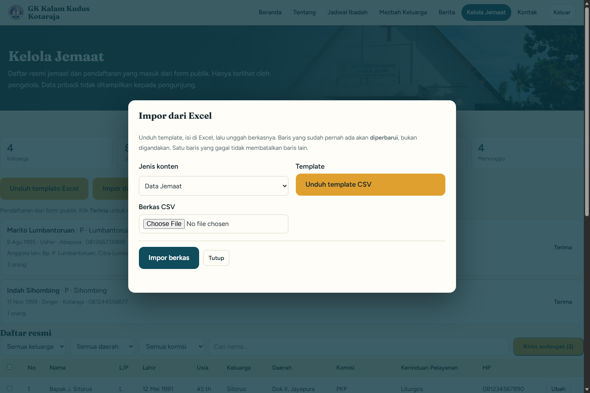
11. Dialog Impor dari Excel. Template juga bisa diunduh lewat tautan di dalam dialog ini.
Dialog impor memakai satu formulir untuk jadwal, renungan, dan data jemaat — pilih jenisnya pada dropdown Jenis konten. Cara impor dari halaman Jadwal Ibadah atau Mezbah Keluarga juga memakai formulir yang sama.
Bagian 8
Menyunting teks Tentang & Kontak
Saat masuk sebagai pengelola, paragraf dan isian pada halaman Tentang serta Kontak bisa disunting langsung di halamannya (klik lalu ketik).
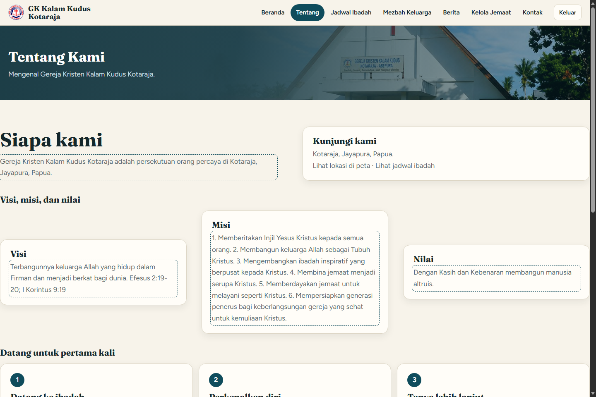
12. Halaman Tentang — teks bisa disunting langsung oleh pengelola.
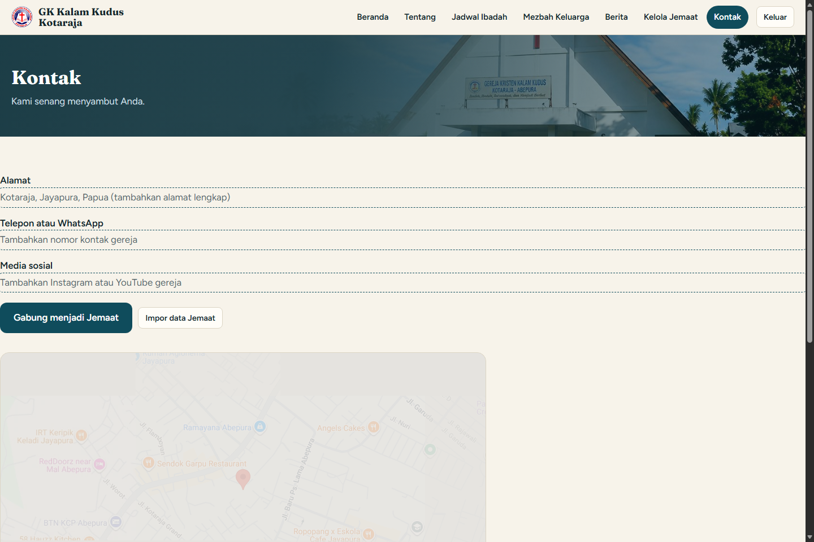
13. Halaman Kontak — alamat, telepon/WhatsApp, dan media sosial bisa diganti langsung.
Setelah selesai menyunting, tekan Keluar untuk kembali ke tampilan pengunjung — perubahan langsung terlihat. Pastikan ejaan dan nomor kontak sudah benar sebelum dipublikasikan.
Bagian 9
Pendaftaran jemaat dari pengunjung
Setiap pengunjung bisa mengisi formulir Gabung menjadi Jemaat di halaman Kontak. Data masuk ke kotak Pendaftaran dari form publik di Kelola Jemaat, lalu Anda klik Terima untuk memindahkannya ke daftar resmi.
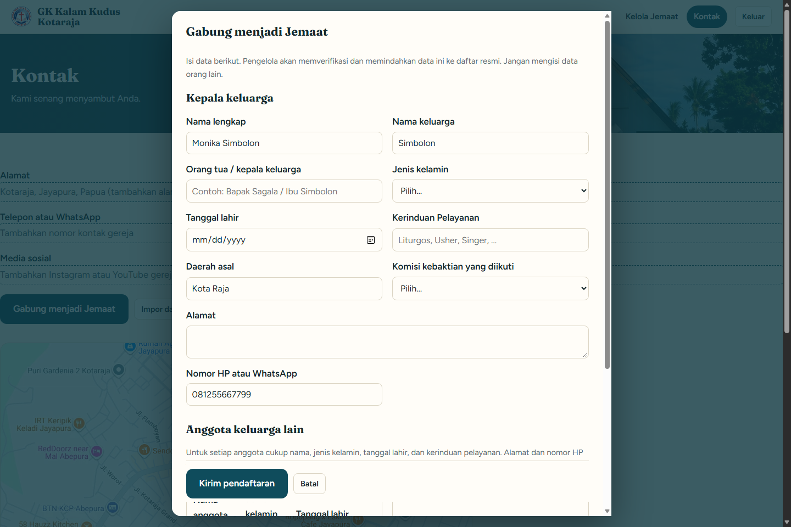
14. Form publik Gabung menjadi Jemaat; anggota keluarga lain bisa ditambahkan dengan tombol "+ Tambah anggota".
Pengunjung hanya bisa mengisi formulir — mereka tidak dapat membaca atau mengubah daftar resmi. Verifikasi datanya dengan orang yang bersangkutan (misalnya lewat WhatsApp) sebelum menekan Terima.
Bagian 10
Keluar dari mode pengelola
Klik tombol Keluar di kanan atas.
Tombol kembali menjadi Login dan menu Kelola Jemaat menghilang — ini tanda Anda sudah keluar.
Selalu keluar (terutama di perangkat bersama) sebelum menutup browser. Sesi yang tertinggal tidak akan dikucurkan oleh siapa pun yang membuka situs ini.